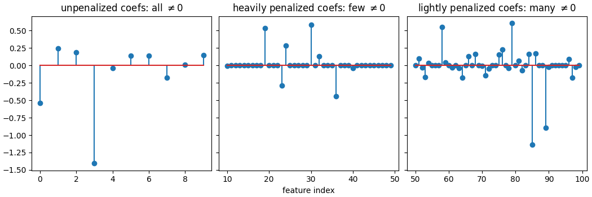

Note
Click here to download the full example code
Weighted Lasso with some zero weights¶
This example demonstrates how to use a weighted lasso with some vanishing weights. The fast solver is adapted to use primal Anderson acceleration, allowing it to not compute the dual and handle 0 weights.
import numpy as np
import matplotlib.pyplot as plt
from skglm import WeightedLasso
from skglm.utils import make_correlated_data
n_features = 100
w_true = np.zeros(n_features)
np.random.seed()
w_true[np.random.choice(n_features, 10, replace=False)] = np.random.choice([-1, 1], 10)
X, y, w_true = make_correlated_data(
n_samples=100, n_features=n_features, random_state=0, w_true=w_true)
weights = np.empty(n_features)
# unpenalize the first 10 features:
weights[:10] = 0
# put large penalty on the 10-50 features
weights[10:50] = 5
# put small penalty on last 50 features
weights[50:] = 1
alpha_max = np.max(np.abs(X[:, weights != 0].T @ y / weights[weights != 0])) / len(y)
clf = WeightedLasso(
alpha=alpha_max/50, weights=weights, fit_intercept=False).fit(X, y)
fig, axarr = plt.subplots(1, 3, sharey=True, figsize=(
10.5, 3.5), constrained_layout=True)
axarr[0].stem(np.arange(10), clf.coef_[:10])
axarr[0].set_title(r"unpenalized coefs: all $\neq 0$")
axarr[1].stem(np.arange(10, 50), clf.coef_[10:50])
axarr[1].set_title(r"heavily penalized coefs: few $\neq 0$")
axarr[2].stem(np.arange(50, 100), clf.coef_[50:])
axarr[2].set_title(r"lightly penalized coefs: many $\neq 0$")
axarr[1].set_xlabel("feature index")
plt.show(block=False)
Total running time of the script: ( 0 minutes 0.319 seconds)